腾讯品牌演进｜CodeBuddy → WorkBuddy
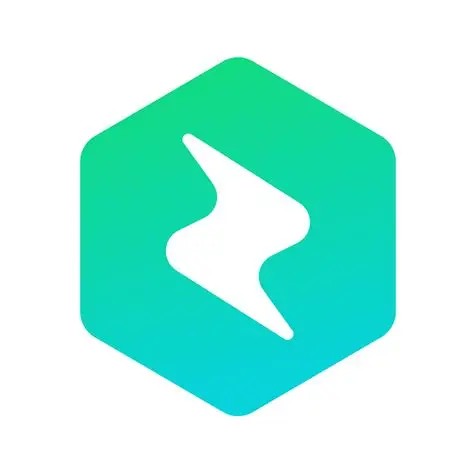
代码效率工具
→
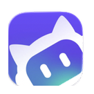
AI 编程伙伴
→
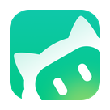
AI 工作伙伴
真正的演进不是“有没有换标”，而是三个明确的身份迁移：闪电=速度与功能；蓝猫=开发者的 AI Buddy；绿猫=面向更广泛工作场景的 Work Buddy。猫这一角色资产被保留，颜色与业务边界被重新定义。
研究对象：能够接收任务、持续执行并回收交付物的 AI 工作入口。
WorkBuddy 强化角色；TRAE 用同源图形区分 Work / Code；千问办公以独立 IP 收束入口。
在任务入口、伙伴身份与交付闭环之间，建立一枚稳定、可扩展的图标。
从原产品到 Work 入口。



真正的演进不是“有没有换标”，而是三个明确的身份迁移：闪电=速度与功能；蓝猫=开发者的 AI Buddy；绿猫=面向更广泛工作场景的 Work Buddy。猫这一角色资产被保留，颜色与业务边界被重新定义。
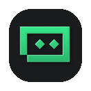
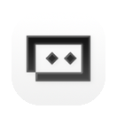
不是同一 Logo。 两者复用“屏幕 + 双菱形”的图形语法，以绿色 / 黑白和深 / 浅容器，明确区分代码与办公。
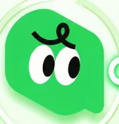
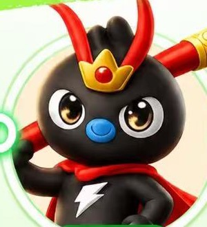
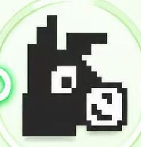
不是“千问通用图标升级”。 Qoder、悟空、MuleRun（骡子快跑）等能力收束到千问办公，以绿色章鱼建立统一的 AI 办公入口。
Work 上线后，图标会重新定义产品角色与工作边界。
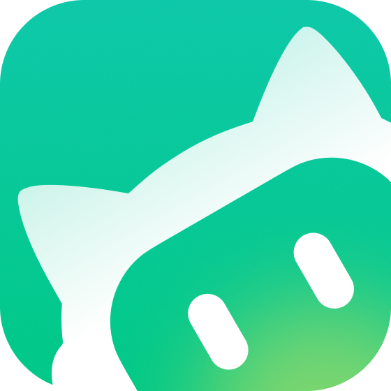
WorkBuddy腾讯 / 官网当前入口不同策略不是审美选择，而是对产品未来扩张边界的判断。
新入口要跨越原受众时，保留已有角色资产的熟悉感，同时借颜色和新符号重新定义“它替谁工作”。
样本：绿色闪电 → 蓝猫 → WorkBuddy 绿色猫主品牌承担图形语法；Code 和 Work 通过深浅容器、色彩与命名快速区分，既统一又可扩展。
样本：TraeCode 绿色 / TraeWork 黑白；Cursor / Cloud Agents当价值来自编排能力集合，原本分散的 Agent 产品被收束，统一平台成为用户委派任务的唯一门牌。
样本：千问办公整合 Qoder、MuleRun、悟空等能力所有图形均直接引用各产品官网当前可访问的实际标志素材；判断依据截至 2026 年 8 月 12 日。
旧 Logo 是彩色无限带。围绕 Work 模式，当前探索从保留连续性到显性建立 AI 伙伴的四条路径。
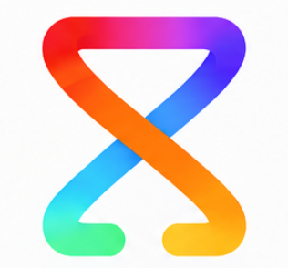
彩色无限带。强调连接、循环和无限可能；是评估新模式方案时需要延续或重新定义的既有品牌资产。
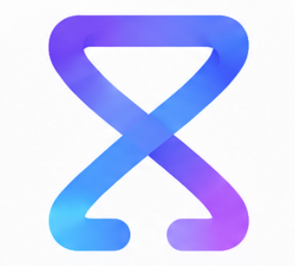
保留无限带，收敛为蓝紫。从通用创作 / 工具感转向更稳重的 AI 工作台，但“Work”与旧产品的区隔较弱。
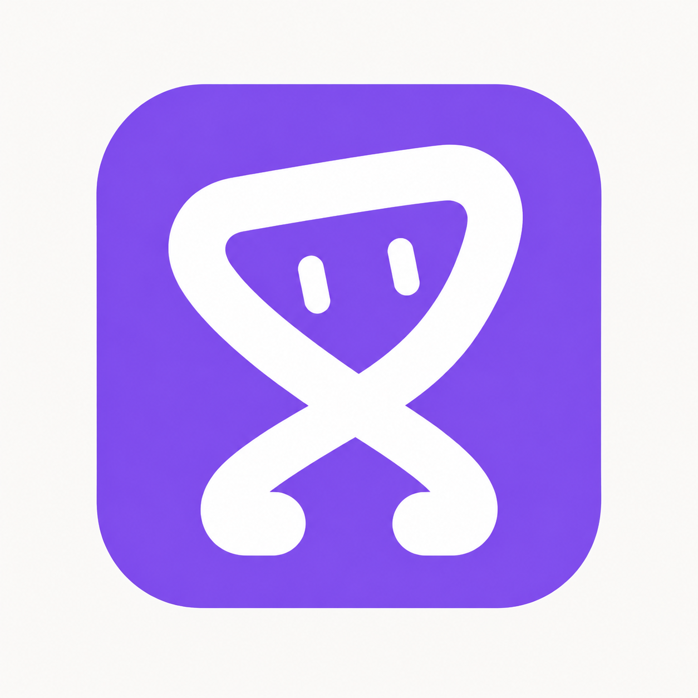
把旧环带转成可识别的伙伴形象。既保留 X / 无限结构，又给新模式一个可被委派的主体，与 AI 员工产品本质更贴近。
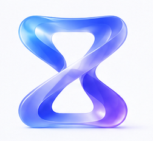
以材质感强化未来感与流动性。适合品牌海报、启动页或动效；若作为主图标，还需要继续验证小尺寸、单色与跨端呈现。
它是四个里唯一同时回答两个问题的方案：保留旧 Logo 的连续性，并为 Work 模式建立清晰的 AI 伙伴身份。
将白色环带、双眼、紫色容器拆为独立可调变量，测试 16px / 24px / 40px 单色可读性；避免继续增加“机器人脸”的具象细节。